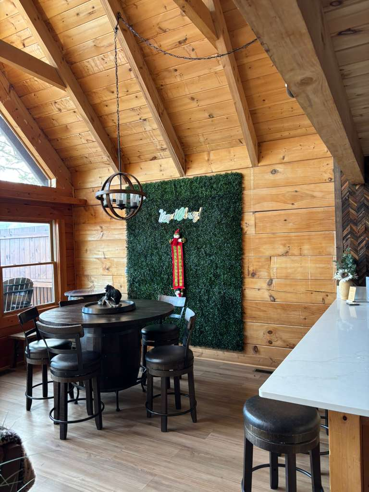

There's something truly magical about spending Christmas in the mountains. The crisp mountain air, the twinkling lights of Gatlinburg below, the possibility of snow dusting the peaks — it's the kind of holiday experience that becomes a cherished family tradition.
At Classy Bear Cabin, you get front-row seats to one of the most spectacular holiday destinations in the South. Gatlinburg transforms into a winter wonderland every November through February, earning its reputation as the "Christmas Capital of the South."
🎄 Gatlinburg's Winter Magic Trolley Ride
Every holiday season, Gatlinburg lights up with over 3 million lights throughout downtown and the surrounding areas. The best way to see it all? The Winter Magic Trolley Ride — a narrated tour through the dazzling light displays that winds through downtown and into the surrounding neighborhoods.
From Classy Bear Cabin, you can see the glow of the city below, then head down to experience it up close. The lights run from November through February, so whether you visit for Thanksgiving, Christmas, or New Year's, the magic awaits.
🎪 Fantasy of Lights Christmas Parade
One of the most beloved holiday traditions in the Smokies! The Gatlinburg Fantasy of Lights Christmas Parade takes place the first Friday in December, drawing thousands of visitors to downtown Gatlinburg.
This spectacular nighttime parade features over 100 illuminated floats, marching bands, giant helium balloons, and special appearances by Santa himself. The parade route winds through the Parkway, with the backdrop of the Smoky Mountains making it unlike any other Christmas parade in the country.
Pro tip: Book your cabin early if you want to attend — this is one of Gatlinburg's busiest weekends of the year! Arrive early to claim a good viewing spot along the Parkway, or watch from one of the downtown restaurants with patio seating.
🎆 New Year's Eve Ball Drop & Fireworks
Ring in the New Year in the mountains! Gatlinburg hosts one of the Southeast's biggest New Year's Eve celebrations right in the heart of downtown at the Space Needle.
The festivities kick off in the evening with live music, entertainment, and a party atmosphere throughout the Parkway. At midnight, watch the famous Ball Drop from the Space Needle tower, followed by a spectacular fireworks display lighting up the sky over the Smoky Mountains.
After the countdown, head back to Classy Bear Cabin for a midnight soak in the hot tub — toasting the New Year with champagne while watching any remaining fireworks from your private deck. It's the perfect way to start fresh.
Planning tips:
- Downtown gets packed — arrive early or use the Gatlinburg trolley
- Dress warmly! Mountain temps drop into the 30s at night
- Book your cabin months in advance — NYE is the busiest week of the year
- Many restaurants offer special NYE dinners — make reservations early

🎅 Holiday Events & Attractions
Ober Mountain Christmas (1 mile away)
Ice skating under the stars, snow tubing, and stunning mountain views. The aerial tramway ride at night, surrounded by twinkling lights, is pure magic.
Dollywood's Smoky Mountain Christmas (15 miles)
Over 6 million lights, holiday shows, festive food, and rides. Consistently voted one of America's best theme park Christmas events.
Anakeesta's Enchanted Winter (2 miles)
Walk through a magical forest of lights, ride the dueling ziplines, and warm up with hot cocoa at this mountaintop attraction.
Ripley's Aquarium (2 miles)
Special holiday programming and a warm indoor activity for any weather. The underwater tunnel is always a hit.
🏔️ Why Spend Christmas at a Cabin?
Hotels are fine, but there's nothing like gathering your family around a real Christmas morning in a mountain cabin. Here's what makes Classy Bear Cabin perfect for the holidays:
- Space for Everyone — Sleeps 9 with 3 king suites, so the whole family has room to spread out
- Full Gourmet Kitchen — Cook your holiday feast together (or order from local restaurants that deliver!)
- Cozy Fireplaces — Electric fireplaces in every suite for that warm holiday glow
- Hot Tub Under the Stars — Nothing beats a snowy soak on Christmas Eve
- Game Room Fun — Arcade cabinet, Wii U, board games, and puzzles for family time
- Stunning Views — Watch the lights of Gatlinburg twinkle below while you sip hot cocoa

❄️ Will There Be Snow?
The Smokies see snow several times each winter, especially at higher elevations. While we can't guarantee a white Christmas, the chances are better here than almost anywhere in the South. Even without snow, the winter mountain scenery is breathtaking — misty valleys, bare trees silhouetted against dramatic skies, and crisp mountain air.
And if it does snow? The view from our hot tub with snowflakes falling around you is absolutely unforgettable.
🎁 Create Your Holiday Tradition
Many of our guests return year after year, making Classy Bear Cabin part of their family's holiday tradition. There's something about waking up Christmas morning to mountain views, gathering in the great room to open presents, and then heading out to explore winter in the Smokies that just feels right.
This year, skip the crowded airports and cookie-cutter hotels. Give your family the gift of a mountain Christmas they'll never forget.
🎄 Book Your Holiday Getaway
Christmas and New Year's dates book early. Reserve your mountain holiday now.
Check AvailabilityFrom our cabin to yours — happy holidays! 🎅🏔️